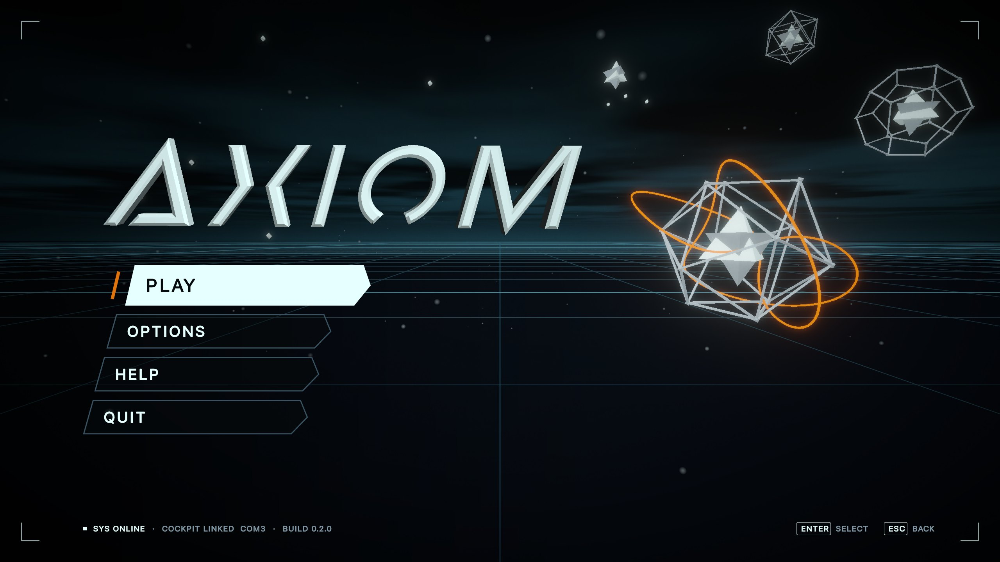
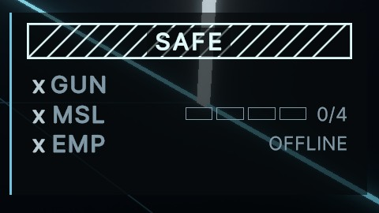
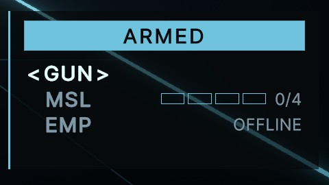
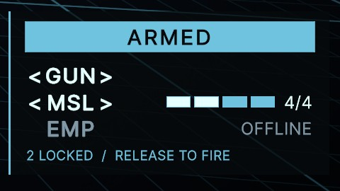
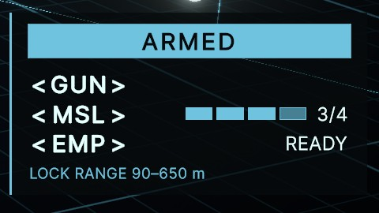

Interface &
interaction.
A flight game.
A physical cockpit.
One visual language.
One continuous flight.
The menu, tutorial rail and first arena share one space. Select a step on the route to see it.
The route.


How the screens connect
Pause returns directly to flight. Options and Help open from the menu or Pause, and Options leads to controller calibration. Results offers Retry or Main menu. A destroyed ship is rebuilt at the last checkpoint.
Losing focus or disconnecting the cockpit pauses the run. Mouse, keyboard and the cockpit stick all drive the menus.
One line at a time.
The tutorial teaches each system when you first need it.
- RingsSteering first, with the next ring lit ahead.
- ArmWeapons start SAFE. The X on the reticle says why nothing fires.
- ShootArmed, with a flag on the first target.
- SlowTight turns ask for less throttle, with the key on the line.
- IrisA closing iris only admits a fast ship.
- BoostA burst on the throttle's final travel.
- ArenaThe rail seals behind you and the space opens up.
- LockPaint targets, then release to fire. Missiles arrive only now.
- EMPOne pulse per life, offered once the drones are in range.
- Final waveNo more lessons. Clear the sector.
Read the flight.
On the ship, in the world, around the screen. Select a layer to see what it tells you.
- Shield segmentsThree cells on the ship's tail. Take a hit, lose one.
- Engine exhaustThe jets stretch with the throttle you ask for.
- Aim reticlesTwo diamonds at 10 m and 25 m. They dim under an X while weapons are SAFE.
- Target flagA verb and a distance on the target itself: SHOOT here, LOCK in the arena.
- Guidance lineOne centred line, silent unless there's something new to do. Key chips name your own controls.
- Run timeTicks up from the moment you get control.
- TargetsWhat you've broken, plus rings on the tutorial.
- Shield gaugeThe ship's three cells again, readable at a glance. Flashes on a loss, sweeps back at a checkpoint.
- Throttle gaugeThe lever's travel in eight segments, with boost at the end and speed in m/s.
- Weapons panelLaid out like a stores page: the MASTER ARM bar, then guns, missiles and EMP.
- Input tagWhich controls are live, and a warning if a sensor drops out.
- Damage pulseAngular edges flash on a hit. Shape and timing carry the warning, not just the colour.
Four kinds of interface
Diegetic elements belong to the game world. Spatial cues sit in 3D but serve the player. The non-diegetic HUD gives precise screen-based readouts. Meta effects communicate the ship's condition through the screen itself.
Cyan is your own systems. Red is damage. Shape, text and timing support the colour. Classification follows Fagerholt and Lorentzon’s Beyond the HUD (2009).
This frame comes from a scripted flight, with the hit triggered for the capture.
One panel, four states.
The panel stays on screen and changes state instead of hiding.
-

SafeHatched bar, every weapon crossed out. -

ArmedGuns ready. Missiles read 0/4 until they're issued. -

LockedPainted targets and the cue to release. -

EMP readyEverything online.
In motion.
The same systems at speed.
-
Arm and fireSAFE clears, the flag calls the target, and the guns open up.
-
Into the arenaThe passage ends and the space opens around the next ring.
-
LockPaint, release, and the missile goes.
-
EMPOne pulse clears the drones around the ship.
Same world.
Different screen.
Turn on the CRT display. The world, title and interface share the glow and curvature of one tube.
Matching views from the same frozen camera. Drag to compare; expand for a closer look.
How the CRT pass works
Standard draws the UI after scene effects. The CRT display composites the interface before its pass, so menus and HUD curve with the image. Pointer positions are mapped to the curved controls.
Visual layers.
Seven steps from bare geometry to the finished menu.
- GeometryFlat-shaded constructs and the grid against a black sky.
- HazeFog and sky share a colour, softening the distant floor.
- AtmosphereA cloud deck, horizon glow, stars and drifting dust add depth.
- GradeTonemapping, exposure and contrast bring the scene together.
- BloomBright geometry spills a little light into the dark.
- FinishVignette and grain finish the image.
- InterfaceThe title, controls and status line complete the frame.
A physical interface.
A stick, a throttle and a second instrument panel. The cockpit brings flight into your hands.
- Stick and FIRESteer and hold FIRE to shoot. In the arena, twist is a rudder for fine aim.
- Throttle leverMeasured by an ultrasonic sensor. Push forward to go faster; cruise sits in the middle.
- MASTER ARMA flip-cover switch. SAFE inhibits weapons while flight carries on.
- EMP domeOne 180 m pulse per life. The lamp stays lit while it's ready.
- LOCK buttonHold to paint up to four targets, release to fire missiles. Not on this model yet.
- LCDA second instrument panel: speed, shield, targets and time, swapping in guidance and warnings.
- MENUPause in flight.
- BuzzerTones for hits, zones, proximity and a lost sensor. Can be muted in Options.
- Throttle lightsA dot at the lever and a recommended throttle range.
- Shield lightsOne light per shield segment.
- Warning lightsLINK, SLOW, FAST, PROX and EMP cues behind printed labels.
- Engine rumbleRumble with speed and a jolt on hits. Today it only kicks on the EMP.
Implemented: working in the gamePlanned: not in the game yet
Concept render of the enclosure.
Next: the Swept Dart.
A new player ship with a modelled interior and a three-second materialization. It isn't in the game yet.

Studio renders, not game captures. The full package is in the repository ↗
From blockout to now.
The menu through the project so far. Step through each stage.
- BlockoutArchive: the first menu, with a flat title and a bare scene.
- Early 3DArchive: an earlier title treatment and lighting pass.
- Version 0.1.9Archive: the geometric wordmark, before the shared palette.
- CurrentOne palette, and an endless grid under a cloud deck.